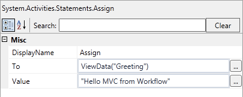

This sample demonstrates how you can invoke a Workflow from an MVC 4 controller and write to the ViewBag/ViewData from the workflow.
This sample requires
Description
This simple "Hello World" workflow adds to the ViewBag a greeting property created from a workflow. In .NET 4 expressions in Workflow are always in Visual Basic. The MVC object ViewBag is a C# dynamic object which cannot be used from Visual Basic. Fortunately ASP.NET MVC also provides ViewData which is a dictionary that points to the same object. Reading/Writing to ViewData is the same as reading/writing to ViewBag.

The workflow is invoked using WorkflowInvoker which makes the call synchronous. You can also use WorkflowApplication but if you do you should inherit from AsyncController.
public ActionResult Index()
{
// Visual Basic does not support dynamic objects - use ViewData to access the ViewBag
// Classic way of passing input arguments
// var input = new Dictionary<string, object> { { "ViewData", this.ViewData } };
// More "MVC" like method using Microsoft.Activities.WorkflowArguments
dynamic input = new WorkflowArguments();
input.ViewData = this.ViewData;
// Synchronously invoke the workflow
// Short-running workflows only.
WorkflowInvoker.Invoke(HelloMvcDefinition, input);
// ViewBag contains the result set by the workflow
// See Views / Hello / Index.cshtml for the related view
return this.View();
}
public ActionResult Index() { // Visual Basic does not support dynamic objects - use ViewData to access the ViewBag // Classic way of passing input arguments // var input = new Dictionary<string, object> { { "ViewData", this.ViewData } }; // More "MVC" like method using Microsoft.Activities.WorkflowArguments dynamic input = new WorkflowArguments(); input.ViewData = this.ViewData; // Synchronously invoke the workflow // Short-running workflows only. WorkflowInvoker.Invoke(HelloMvcDefinition, input); // ViewBag contains the result set by the workflow // See Views / Hello / Index.cshtml for the related view return this.View(); }
The Hello view simply accesses the greeting from the ViewBag. The controller has already invoked the workflow which has executed prior to displaying the view.
@{
ViewBag.Title = "Hello";
}
<h2>
Hello</h2>
<p>
Workflow said @ViewBag.Greeting
</p>
@{
ViewBag.Title = "Hello";
}
<h2>
Hello</h2>
<p>
Workflow said @ViewBag.Greeting
</p>
This sample is the basic ASP.NET MVC 4 template plus a couple of additional files
This sample is part of a larger project to explore the integration of Workflow with ASP.NET MVC. More information is available at http://wfmvc.codeplex.com